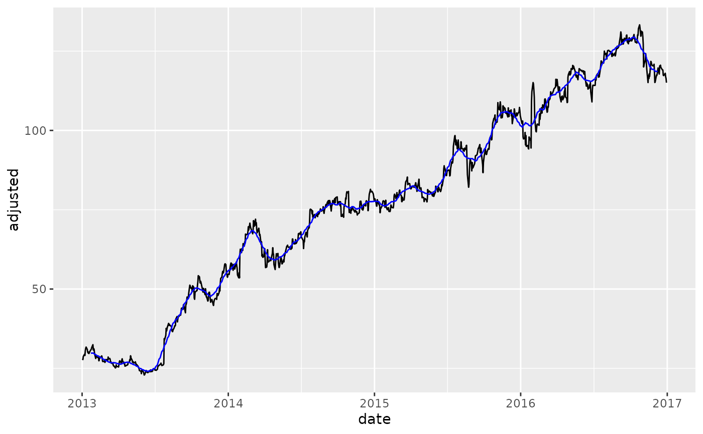
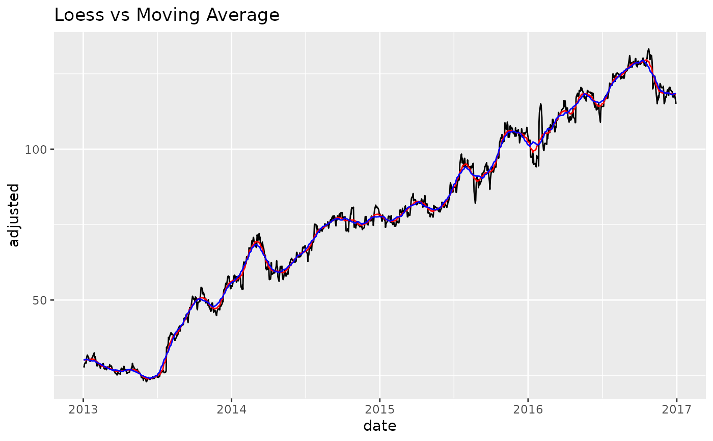

slidify_vec() applies a summary function to a rolling sequence of windows.
Usage
slidify_vec(
.x,
.f,
...,
.period = 1,
.align = c("center", "left", "right"),
.partial = FALSE
)Arguments
- .x
A vector to have a rolling window transformation applied.
- .f
A summary
[function / formula]If a function, e.g.
mean, the function is used with any additional arguments,....If a formula, e.g.
~ mean(., na.rm = TRUE), it is converted to a function.
This syntax allows you to create very compact anonymous functions.
- ...
Additional arguments passed on to the
.ffunction.- .period
The number of periods to include in the local rolling window. This is effectively the "window size".
- .align
One of "center", "left" or "right".
- .partial
Should the moving window be allowed to return partial (incomplete) windows instead of
NAvalues. Set to FALSE by default, but can be switched to TRUE to removeNA's.
Details
The slidify_vec() function is a wrapper for slider::slide_vec() with parameters
simplified "center", "left", "right" alignment.
Vector Length In == Vector Length Out
NA values or .partial values
are always returned to ensure the length of the return vector
is the same length of the incoming vector. This ensures easier use with dplyr::mutate().
Alignment
Rolling functions generate .period - 1 fewer values than the incoming vector.
Thus, the vector needs to be aligned. Alignment of the vector follows 3 types:
Center:
NAor.partialvalues are divided and added to the beginning and end of the series to "Center" the moving average. This is common for de-noising operations. See also[smooth_vec()]for LOESS without NA values.Left:
NAor.partialvalues are added to the end to shift the series to the Left.Right:
NAor.partialvalues are added to the beginning to shif the series to the Right. This is common in Financial Applications such as moving average cross-overs.
Partial Values
The advantage to using
.partialvalues vsNApadding is that the series can be filled (good for time-series de-noising operations).The downside to partial values is that the partials can become less stable at the regions where incomplete windows are used.
If instability is not desirable for de-noising operations, a suitable alternative
is smooth_vec(), which implements local polynomial regression.
References
Slider R Package by Davis Vaughan
See also
Modeling and More Complex Rolling Operations:
step_slidify()- Roll apply fortidymodelsmodelingtk_augment_slidify()- Add many rolling columns group-wiseslidify()- Turn any function into a rolling function. Great for rolling cor, rolling regression, etc.For more complex rolling operations, check out the
sliderR package.
Vectorized Transformation Functions:
Box Cox Transformation:
box_cox_vec()Lag Transformation:
lag_vec()Differencing Transformation:
diff_vec()Rolling Window Transformation:
slidify_vec()Loess Smoothing Transformation:
smooth_vec()Fourier Series:
fourier_vec()Missing Value Imputation for Time Series:
ts_impute_vec()
Examples
library(tidyverse)
library(tidyquant)
library(timetk)
# Training Data
FB_tbl <- FANG %>%
filter(symbol == "FB") %>%
select(symbol, date, adjusted)
# ---- FUNCTION FORMAT ----
# - The `.f = mean` function is used. Argument `na.rm = TRUE` is passed as ...
FB_tbl %>%
mutate(adjusted_30_ma = slidify_vec(
.x = adjusted,
.period = 30,
.f = mean,
na.rm = TRUE,
.align = "center")) %>%
ggplot(aes(date, adjusted)) +
geom_line() +
geom_line(aes(y = adjusted_30_ma), color = "blue")
#> Warning: Removed 29 rows containing missing values (`geom_line()`).

# ---- FORMULA FORMAT ----
# - Anonymous function `.f = ~ mean(., na.rm = TRUE)` is used
FB_tbl %>%
mutate(adjusted_30_ma = slidify_vec(
.x = adjusted,
.period = 30,
.f = ~ mean(., na.rm = TRUE),
.align = "center")) %>%
ggplot(aes(date, adjusted)) +
geom_line() +
geom_line(aes(y = adjusted_30_ma), color = "blue")
#> Warning: Removed 29 rows containing missing values (`geom_line()`).
# ---- PARTIAL VALUES ----
# - set `.partial = TRUE`
FB_tbl %>%
mutate(adjusted_30_ma = slidify_vec(
.x = adjusted,
.f = ~ mean(., na.rm = TRUE),
.period = 30,
.align = "center",
.partial = TRUE)) %>%
ggplot(aes(date, adjusted)) +
geom_line() +
geom_line(aes(y = adjusted_30_ma), color = "blue")
# ---- Loess vs Moving Average ----
# - Loess: Using `.degree = 0` to make less flexible. Comperable to a moving average.
FB_tbl %>%
mutate(
adjusted_loess_30 = smooth_vec(adjusted, period = 30, degree = 0),
adjusted_ma_30 = slidify_vec(adjusted, .f = AVERAGE,
.period = 30, .partial = TRUE)
) %>%
ggplot(aes(date, adjusted)) +
geom_line() +
geom_line(aes(y = adjusted_loess_30), color = "red") +
geom_line(aes(y = adjusted_ma_30), color = "blue") +
labs(title = "Loess vs Moving Average")
